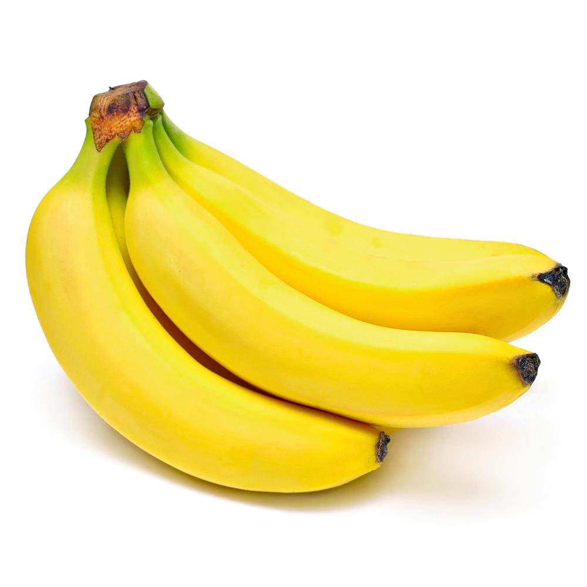

Những tác dụng ngoài ý muốn khi ăn chuối

Gây đau đầu
Trong chuối chứa tyramine, phenyethyamine và axit amin có thể làm giãn mạch máu và làm tăng lưu lượng máu lên não,
dễ gây ra cho bạn những cơn đau đầu nếu ăn quá nhiều. Đặc biệt, trong chuối chín có lượng các chất này cao hơn nên tốt nhất,
bạn đừng nên để chuối quá lâu hoặc ăn chuối quá chín.
Có hại cho dạ dày
Chuối sẽ phát huy tốt tác dụng thúc đẩy hệ tiêu hóa hoạt động khi bạn ăn chúng sau bữa cơm khoảng 1 - 2 tiếng. Ngược lại, nếu dùng chuối làm thức ăn khi đói thì
thật nguy hại. Trong chuối có chứa nhiều magie. Ăn chuối lúc dạ dày bạn đang trống rỗng sẽ làm lượng magie tăng đột ngột trong máu, gây mất cân bằng tim mạch và
làm tổn hại đến sức khỏe. Lượng Vitamin C dồi dào trong chuối nếu đưa vào cơ thể khi đói cũng khiến bạn bị đau dạ dày ngay lập tức.
Gây buồn ngủ
Theo các nhà khoa học, chuối có thể tạo ra seratonin, một loại chất khiến cơ thể bạn có cảm giác buồn ngủ nhanh chóng. Vì vậy những lúc bạn cần được tỉnh táo như lái
xe đường dài hoặc khi thi cử, ôn bài… thì tuyệt đối không được ăn chuối. Bạn có thể ăn chúng trước giờ đi ngủ để ngủ ngon hơn.
Làm cơ thể mệt mỏi
Chuối là loại trái cây bổ dưỡng nhưng nếu ăn quá nhiều lại không hề tốt. Nguyên do vì lượng magie có trong chuối nếu nạp nhiều vào cơ thể có thể gây ra ngộ độc magie với
biểu hiện bên ngoài là tình trạng mệt mỏi, ốm yếu và tiêu chảy. Bạn chỉ nên ăn chuối với lượng vừa phải để magie giúp thư giãn các cơ bắp trong cơ thể.
Gây buồn nôn, mạch đập chậm
Một quả chuối chứa 400mg kali, trong khi đó cơ thể cần bổ sung 4.700mg kali mỗi ngày. Do vậy, bạn đừng ăn quá nhiều chuối một lúc để tránh tình trạng tăng kali trong máu, có thể
làm cho nhịp tim bất thường, buồn nôn, mạch đập chậm hơn, thậm chí làm tim ngừng đập. Tốt nhất, bạn nên ăn chỉ từ 2 – 3 quả
chuối mỗi ngày sẽ cung cấp đủ kali để điều hòa các mô cơ bắp, tăng quá trình tiêu hóa và trao đổi chất trong cơ thể.
Tổn hại thần kinh
Vitamin B6 có trong chuối giúp bạn duy trì một hệ thần kinh khỏe mạnh, giúp cơ thể phân tán được carbohydrates và chất béo. Ăn quá nhiều chuối sẽ khiến cơ thể hấp thu quá
nhiều vitamin B6, từ đó sinh ra độc tố, gây tổn tại tới hệ thần kinh của bạn và làm tê liệt chân tay, rất nguy hiểm cho sức khỏe.